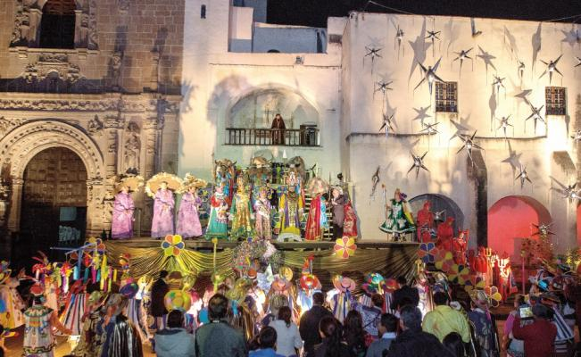

BIENVENIDO AL MUNICIPIO DE ACOLMAN.
Tradiciones.
De acuerdo con la tradición, en este Pueblo con Encanto del Estado
de México nació la costumbre de elaborar estas coloridas artesanías que hoy dan
magia y alegría la Navidad en nuestro territorio.
La Piñata en las Posadas
Llegado el momento de la Posada, la piñata se llena con dulces, cacahuates y frutas
de la estación: naranjas, limas, mandarinas, tejocotes, jícamas, cañas y otras. Se elige un lugar
apropiado para romperla, de preferencia un jardín o un patio, se amarra con una soga fuerte y se
cuelga de manera que pueda ser fácilmente subida y bajada, la rama de un árbol, una argolla o
un travesaño.
Después de darle de palos, alguno de los muchachos logra romper la piñta que deja caer una lluvia
de dulces y frutas; inmediatamente la chiquillería se abalanza sobre ellos y asegura su botín.

Monumentos Emblemáticos.
Construido por la Orden de San Agustín a partir de 1539, el complejo arquitectónico luce por su fachada,
considerada por los especialistas en historia del arte como la joya del plateresco en América. También se caracteriza
por su pintura mural, que es de las más tempranas en ejecutarse en América Latina.
Puede visitar los pasillos de ambos claustros, una celda ambientada, la terraza con la tina de baño y otra área de nombre y uso antiguo
desconocido (probablemente se impartían clases de gramática y oficios) y la capilla abierta dedicada a Santa Catalina de Alejandría en
pintura mural del siglo XVI.
Además en el atrio, una de las capillas posas rescatadas y fuera de él, la cruz atrial, elaborada en cantera y labrada de estilo tequitqui,
un trabajo sobre los símbolos pasionarios de gran belleza.
Gastronomía.
Los principales bocados gastronómicos tienen su base en el maíz y en el frijol: una enorme variedad de tamales preparados en la que
participan el garbanzo, las habas, el carnero, el pollo, la barbacoa y el conejo forman su rico menú. Los fríjoles, los insustituibles, cocinados con
epazote, se acompañan también con queso y longaniza. También encontrarás mixiotes de carne, barbacoa, consomé de carnero y mole de guajolote.
Una bebida tradicional es el "pulque".
Fiestas.
Del 19 al 22 de diciembre, lánzate a este pueblo con encanto del Estado de México donde las coloridas piñatas son las protagonistas. Del 19 al 22 de diciembre,
no te pierdas la edición 34 de la Feria de la Piñata en el municipio de Acolman, Estado de México. Ahí encontrarás las piñatas perfectas para tus posadas.
También se presentan a la fiesta grandes celebridades y grupos de músicos en la participación en la feria internacional de la piñata.